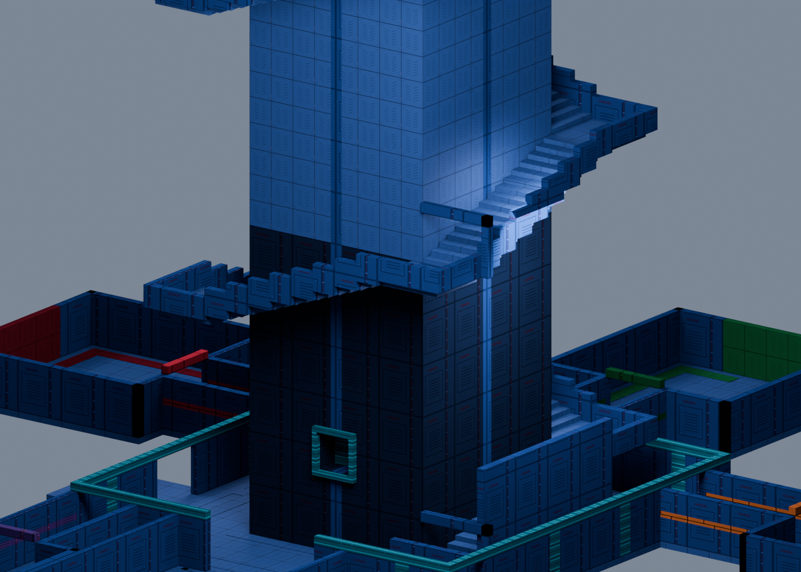
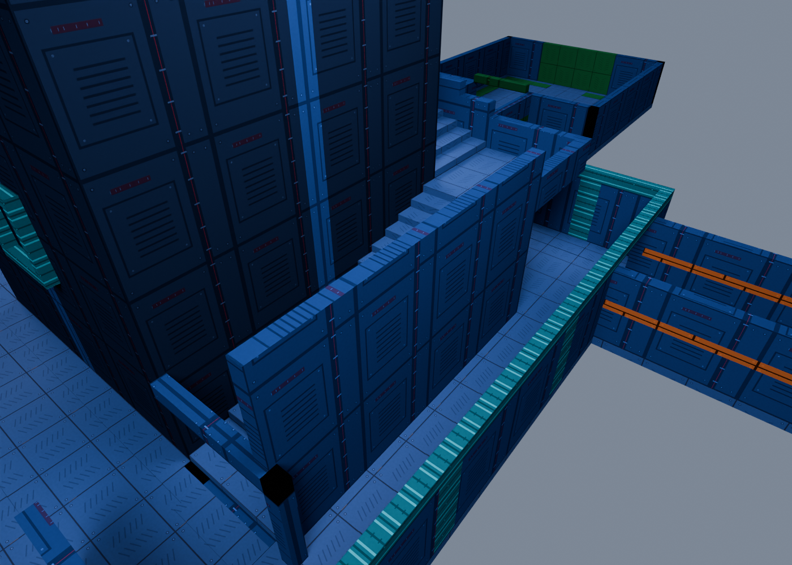

Crown material review / Tower pass
The crown's detail,
throughout the climb.
Latest layout pass: the top transit bay and bottom-to-crown return. · The broken descent
Combined full build and fresh lighting bake passed; ready for your playtest. These are material and sky previews; final in-game brightness is pending your playtest.
Detailed treads, metal service panels, seams and fasteners now extend across both towers and the surrounding architecture. The existing district colors carry through the crown's material family.

Actual lower-tower geometry.
431 solids, exported texture maps, neutral Blender studio lighting.

The same construction as the crown.
Material review only. Native lights, probes and gameplay props are omitted.
Light along the route.
240 new neutral light pools follow the stair flights: two per lap on the main tower and spire. Another 293 existing lights are tuned for the new surfaces, with colored landing accents and softer room fills. They follow the existing power-on sequence.
Bring the city into view.
The same sky image now has twice its previous intensity. Its contribution to ambient world lighting is compensated separately, keeping local lights in control of the tower's readability.
 Brighter sky asset — projected preview.
Brighter sky asset — projected preview.
This is not a game screenshot. BO3's final exposure and bloom still need the native test.